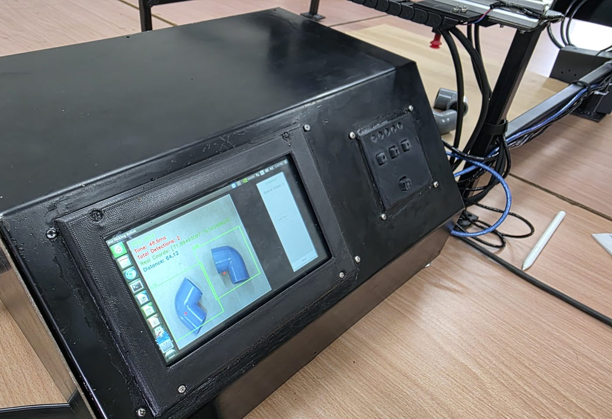
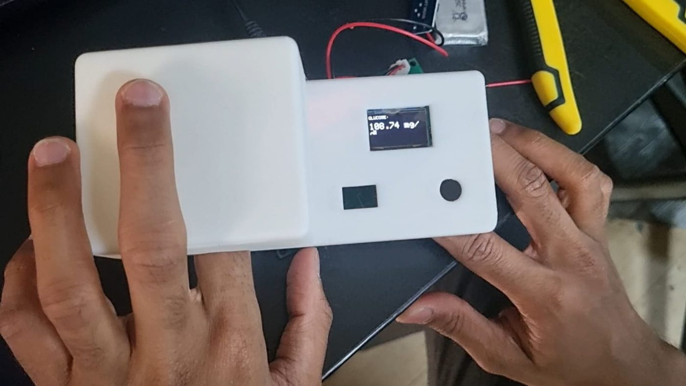
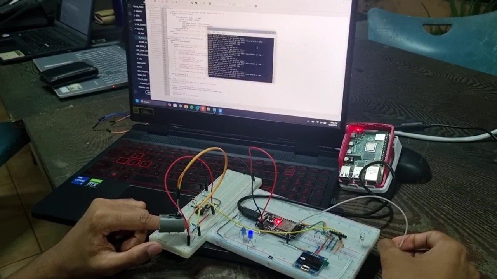
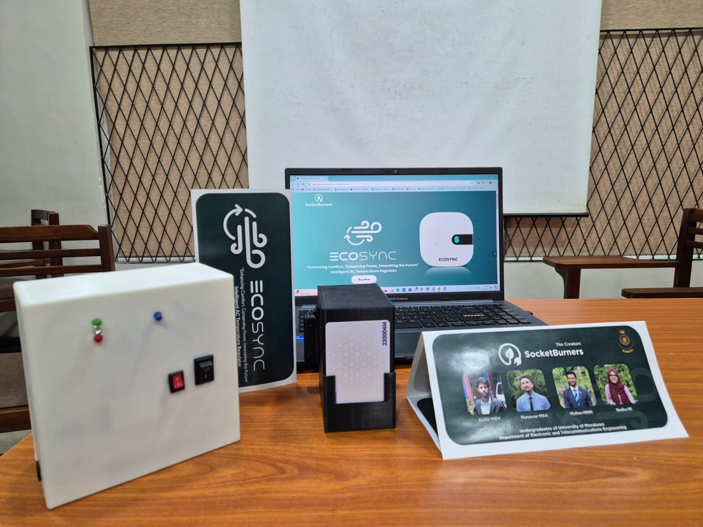
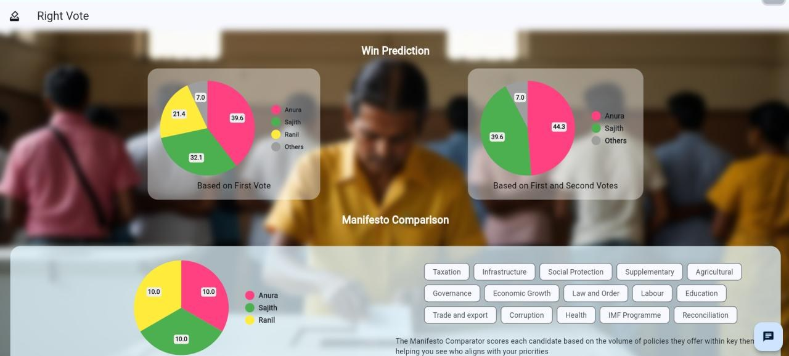

Cross-Lingual Isolated Sign Language Recognition
Continuing my sign language work from Sydney: researching isolated sign language recognition (ISLR) using cross-lingual datasets.
These range from deep learning research to embedded hardware: sign language datasets, wearable motion sensing, vision-guided robots and a non-invasive glucometer.
Continuing my sign language work from Sydney: researching isolated sign language recognition (ISLR) using cross-lingual datasets.
Developing a hardware platform that acquires gut sounds, then denoises and classifies them in real time.
Extending the TROIKA heart-rate estimation method and comparing variants that can run on Nordic microcontrollers.





An analog PID solar tracker built from op-amps, LDR sensing and PWM motor control, on a custom two-layer PCB.
An autonomous robot that coordinates an ESP32 and an Arduino Nano over UART, with sensor fusion for line following, maze solving and object manipulation.